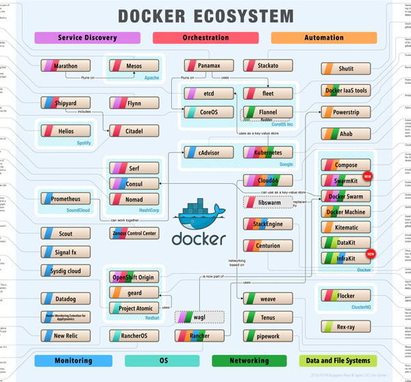

Docker ecosystem
2014-09-10- Docker
- networking
- ahab
- cAdvisor
- Centurion
- chart
- Consul
- CoreOS
- data management
- Datakit
- diagram
- Docker ecosystem
- docker IAAS
- Docker Machine
- Docker swarm
- ecosystem
- etcd
- Flannel
- fleet
- geard
- Helios
- InfraKit
- kubernetes
- Marathon
- Mesos
- monitoring
- New Relic
- Nomad
- Openshift Origin
- orchestration
- OS
- Panamax
- powerstrip
- Project Atomic
- Prometheus
- rancher
- Rancher OS
- scheme
- Scout
- Serf
- service discovery
- Shipyard
- Signal fx
- Stackato
- StackEngine
- SwarmKit
- Sysdig cloud
- wagl
This chart depicts a structure of Docker-related tools in terms of their functionality. Docker ecosystem is ever changing, so is this chart. I plan to update it more or less regularly. Any suggestions on how to improve it are welcome.

Last update 2016/10/14
About classification
Service discovery
Tools for registering and searching information about services provided by applications running in containers (including multi-host applications).
Orchestration
Tools with main purpose of managing multi-host multi-container applications. Usually help managing multiple containers and network connections between them.
Automation
Tools that help :
a. making containers easier to use,
b. giving containers new features,
c. building a service powered by containers.
Monitoring
Tools for monitoring resources used by containers, containers heath- check, monitoring in-container environment.
OS
Light-weight OS for running containers.
Networking
Tools for organising inter-container and host-container communications.
Data and File Systems
Tools for managing data in containers and tools that include or control Docker file system plugins.
Note: Tools’ features presented on the chart are based on what is advertised on the tool web site or on information provided by the tool developers.